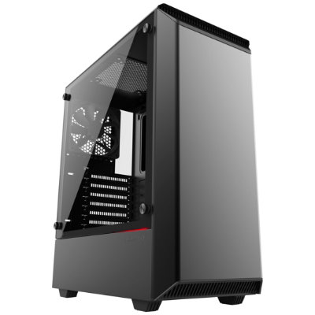
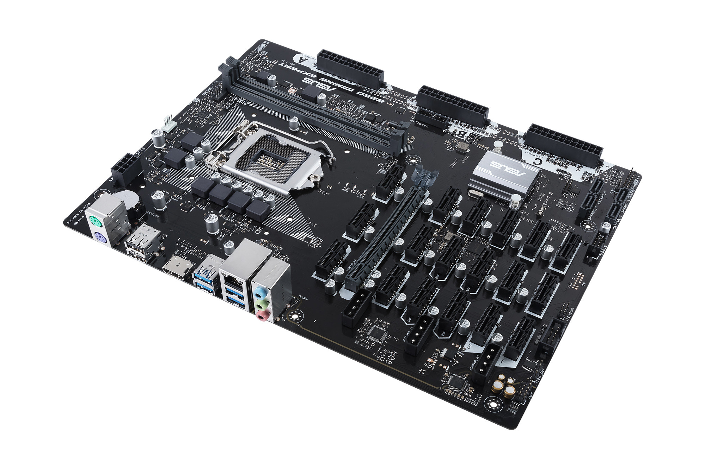
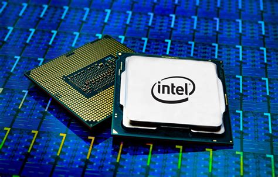
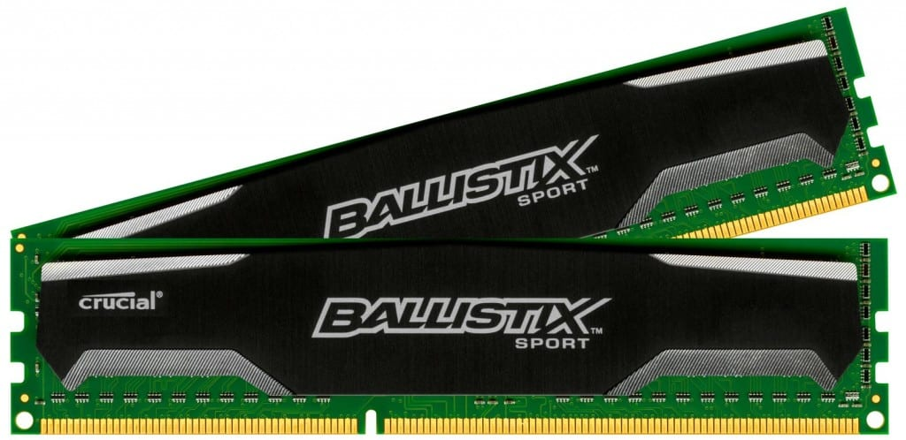
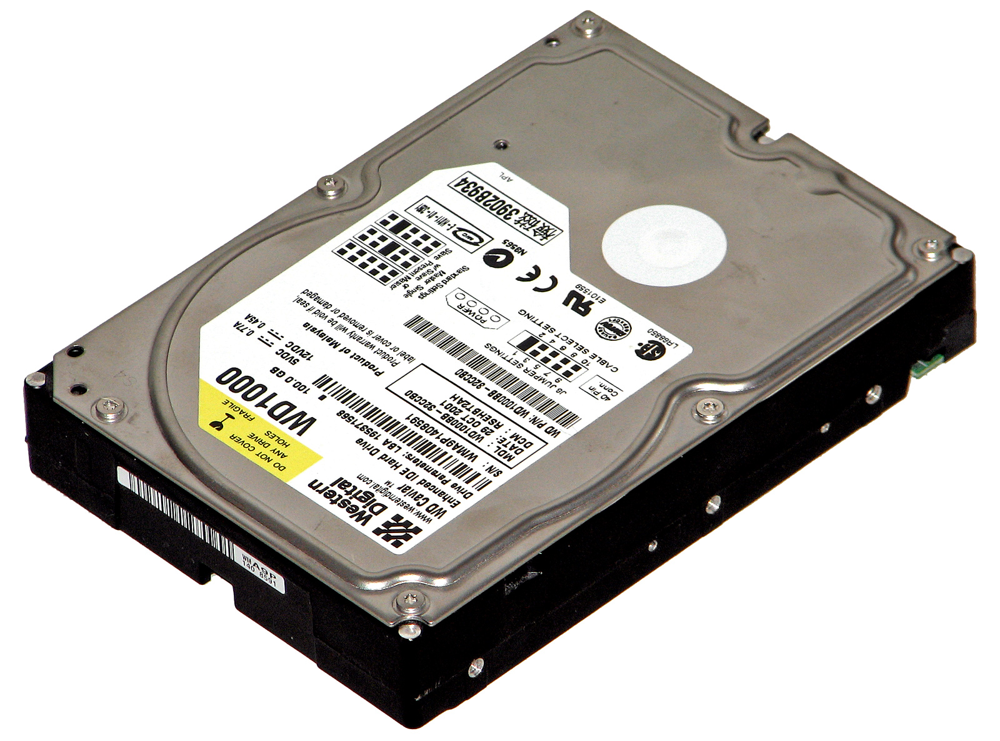
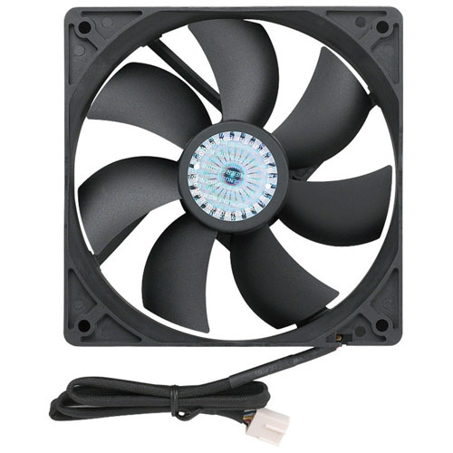

Korleis data er bygd opp
Kabinett
Kabinett er det som oppbevare alle komponentane

hovedkort
De fleste komponentene inni PC-kabinettet er plassert på hovedkortet og kobla til hovedkortet.

Prossesor/CPU
Prosessoren (CPU, Central Processing Unit) er den delen av datamaskinen der selve databehandlingen foregår.
Prosessoren henter, tolker og utfører de instruksjonene som endrer maskinens data.
Instruksjonene kan være flytting av data, beregninger, sammenligninger, konvertering, hopp fra ett sted i minnet til et annet, og andre, mer spesialiserte operasjoner.

Minnebrikke/RAM
RAM (Random Access Memory) er den typen minne som brukes mest i en PC. RAM operer svært hurtig og egner seg derfor som arbeidsminne.

Harddisk
En harddisk er en enhet der diskene må settes i rotasjon før den kan brukes, lese- og skrivehodene må posisjoneres over den magnetiserbare overflaten, og datamaskinen må holde orden på hvilke deler av den magnetiserbare overflaten som er brukt og hvilke som er ledige til å lagre informasjon på.

Kjøler
Kjøler er for å lufte og kjøle komponentane slik at dei ikkje blir for varme.

Operativ System/OS
Eit operativsystem er eit grunnleggjande program som blir køyrd på ei datamaskin. Dette programmet lèt deg køyre andre dataprogram.